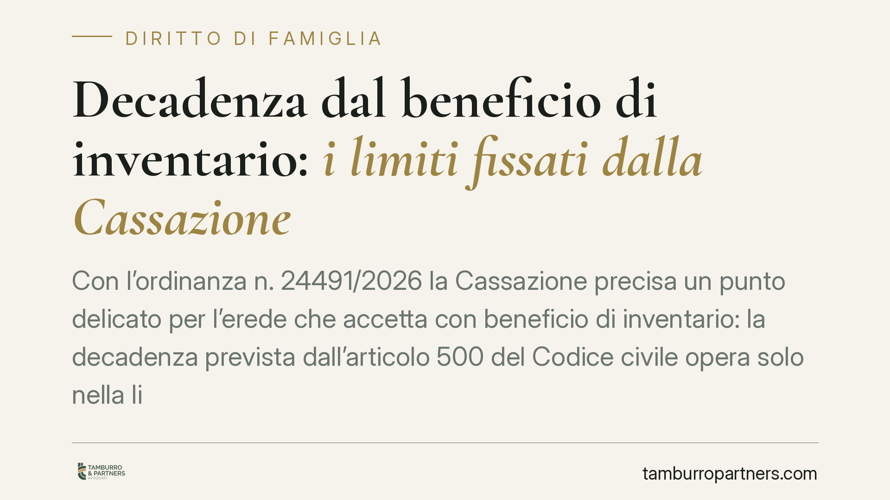

Decadenza dal beneficio di inventario: i limiti fissati dalla Cassazione
Con l'ordinanza n. 24491/2026 la Cassazione precisa un punto delicato per l'erede che accetta con beneficio di inventario: la decadenza prevista dall'articolo 500 del Codice civile opera solo nella liquidazione concorsuale dell'eredità, non in quella individuale regolare. Una distinzione che incide sulla responsabilità per i debiti ereditari e merita attenzione.

Il caso e la decisione
L'accettazione dell'eredità con beneficio di inventario è lo strumento che separa il patrimonio del defunto da quello dell'erede. In pratica, chi accetta in questo modo risponde dei debiti ereditari solo nei limiti di quanto ha ricevuto (art. 490 c.c.): non con i propri beni personali.
Questa protezione, però, non è incondizionata. Il Codice civile prevede alcune ipotesi di decadenza, cioè di perdita del beneficio, con la conseguenza che l'erede torna a rispondere dei debiti in modo illimitato.
La Cassazione, con l'ordinanza n. 24491/2026, è intervenuta su una di queste ipotesi, chiarendo l'esatta portata dell'articolo 500 del Codice civile.
Inquadramento normativo
Gli articoli 495-508 c.c. disciplinano due modi di pagare i debiti ereditari dopo l'accettazione beneficiata.
Il primo è la liquidazione individuale regolare: l'erede paga i creditori e i legatari man mano che si presentano, seguendo l'ordine delle cause di prelazione (ipoteche, pegni, privilegi). È la procedura ordinaria, più snella.
Il secondo è la liquidazione concorsuale: si apre quando i creditori o i legatari propongono opposizione, oppure quando l'erede stesso la richiede. In questo scenario tutti i creditori concorrono insieme sul patrimonio ereditario, secondo una graduazione formale.
L'articolo 500 c.c. si colloca proprio nella liquidazione concorsuale. Prevede che il giudice, su istanza, assegni all'erede un termine entro cui provvedere agli adempimenti della procedura; il mancato rispetto di quel termine comporta la decadenza dal beneficio.
La questione interpretativa era questa: quel termine e la relativa decadenza valgono sempre, oppure solo nella procedura concorsuale?
Cosa ha stabilito la Corte
La Cassazione ha dato una risposta netta. Il termine previsto dall'articolo 500 c.c., e la conseguente decadenza dal beneficio di inventario, operano soltanto nell'ambito della liquidazione concorsuale.
Nella liquidazione individuale regolare quella disciplina non si applica. L'erede che paga i creditori secondo l'ordine delle prelazioni, senza che sia stata aperta una procedura concorsuale, non incorre nella decadenza prevista da quella norma.
Il ragionamento è coerente con la struttura del Codice: l'articolo 500 presuppone la dimensione collettiva del concorso tra creditori, con tempi e adempimenti scanditi dal giudice. Fuori da quel contesto, la decadenza automatica per scadenza del termine non trova fondamento.
Implicazioni pratiche
Per l'erede beneficiato la distinzione è rilevante sul piano della responsabilità.
Se la liquidazione resta individuale e regolare, il mancato rispetto dei termini della procedura concorsuale non lo espone alla perdita del beneficio. La protezione patrimoniale, in altre parole, non si sgretola per un adempimento che riguarda un procedimento diverso.
Resta però fondamentale non confondere i piani. Una volta aperta la liquidazione concorsuale, anche su iniziativa di un singolo creditore, l'erede entra in un regime più rigido: qui il termine fissato dal giudice va rispettato scrupolosamente, perché la decadenza è reale e produce effetti pesanti.
Per i creditori, la pronuncia conferma che il passaggio alla liquidazione concorsuale è lo strumento attraverso cui attivare i meccanismi di controllo e, se del caso, la decadenza dell'erede inadempiente.
Attenzione, infine, alle altre cause di decadenza previste dal Codice, che restano pienamente operative: l'omissione o l'infedeltà dell'inventario, l'alienazione di beni ereditari senza autorizzazione, la mancata osservanza degli obblighi di amministrazione separata del patrimonio.
Cosa fare in concreto
- Redigete l'inventario con precisione e nei termini di legge: è il presupposto stesso del beneficio e la sua omissione o infedeltà resta causa autonoma di decadenza.
- Distinguete la procedura in corso: verificate se la liquidazione è individuale regolare o se un creditore ha attivato il concorso, perché gli obblighi cambiano.
- Rispettate i termini del giudice se è aperta la liquidazione concorsuale: in questo scenario l'articolo 500 c.c. produce la decadenza.
- Non disponete dei beni ereditari senza le necessarie autorizzazioni: ogni atto non autorizzato può far venire meno il beneficio.
- Documentate i pagamenti ai creditori e ai legatari, rispettando l'ordine delle cause di prelazione.
Consigliamo di valutare la posizione con assistenza qualificata prima di compiere atti sul patrimonio ereditario, specie quando emergono più creditori o il rischio di opposizione.
---
Contributo informativo a cura di Tamburro & Partners - Avv. Giuseppe Tamburro. Non costituisce parere legale.
Ogni famiglia ha il suo equilibrio.
Separazione, divorzio, affidamento, assegno: se vuoi un confronto riservato su una specifica situazione, scrivi allo studio. Ti rispondiamo entro un giorno lavorativo.